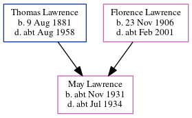

May Winifred Lilian Lawrence cNov 1931 - c1934
[ Home ] | [ Calendar ] | [ Surnames Index ] | [ Census Index ] | [ Family History ]The child of Thomas Lawrence (a builder) and Florence Lawrence, May Lawrence, the first cousin once-removed on the mother's side of Nigel Horne, was born in Thanet, Kent, England c. Nov 19311.
She died c. Jul 1934 in Eastry, Kent, England2 and was buried in Sutton, Kent, England on Jul 21, 19343,4.
Parents
- Thomas William was born on Aug 9, 1881
- Florence Eva was born on Nov 23, 1906
Citations
- England & Wales births 1837-2006 - Findmypast
- England & Wales deaths 1837-2007 - Findmypast
- Kent, Canterbury Archdeaconry Burials - Findmypast
- England Deaths & Burials 1538-1991 - Findmypast
Media
England & Wales deaths 1837-2007 - BMD/D/1934/3/AZ/000483/046
England & Wales births 1837-2006 - BMD/B/1931/4/AZ/000667/112
Kent, Canterbury Archdeaconry burials - GBPRS/CANT/D/95322667
England Deaths & Burials 1538-1991 - R_276815839
Family Tree
Generated by ged2site. Last updated on Jun 11, 2024